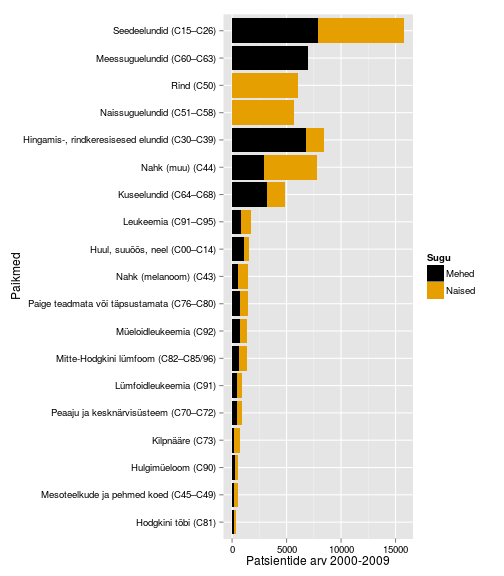

Vähi geneetilised alused
Taavi Päll
vanemteadur, VTAK
Vähk kui haigus
Vähk
- Mõiste vähk (tuumor, pahaloomuline kasvaja, neoplasm) tähistab suurt hulka erinevaid haiguseid (NCI ~160 olulisemat) mis võivad tekkida kõigis keha kudedes.
- Vähi tunnuseks on ebanormaalsete rakkude kasv väljapoole nende normaalseid koe piire. Kõrvalolevate kudede invasioon ja levik teistesse organitesse ehk metastaseerumine.
- Metastaasid on ka enamuse kasvajatest tingitud surmade põhjustajaks.
WHO andmetel
- Vähkkasvajad on maailmas üks juhtivatest surma põhjustatavatest haigustest, nõudes 8.2 miljonit elu 2012. a (EU-27 osakaal 2012: 1.27 miljonit (15%))
- Kopsu-, maksa-, mao-, kolorektaal- ja rinnakasvajad põhjustavad enim vähisurmasid
- Sagedasemad vähitüübid on naistel ja meestel erinevad
Vähi kolm peamist väljakutset maailmas
- ~30% vähisurmadest on tingitud viiest käitumis- ja dieediriskist:
- kõrge kehamassiindeks,
- vähe puu- ja aedvilju menüüs,
- vähene füüsiline aktiivsus,
- tubakas/suitsetamine,
- alkohol
- arengumaades põhjustavad 20% vähkidest hepatiidi viirused B ja C ning papilloomiviirused
- ennustatakse, et haigestumus suureneb maailmas 14 miljonilt 2012.a 22 miljonini 2030-ndatel
Kõige sagedasemad surmaga lõppevad vähid maailmas, 2012 aasta seis:
- kops (1.59 miljonit surma)
- maks (745 000)
- magu (723 000 deaths)
- kolorektaal (694 000)
- rinnavähk (521 000)
- söögitoru (400 000)
Erinevused 5-aasta elulemuses maailmas

Kasvajatesse haigestumus Eestis

Sagedasemad paikmed Eestis

Vähitüübid
Kliiniliselt võib kasvajad jaotada kaheks
- healoomulised (lokaliseerunud, mitteinvasiivsed)
- pahaloomulised (invasiivsed, metastaatilised)
Metastaasid ehk vähi siirded vastutavad lõviosa kasvajatest tingitud surmade eest!

Neli põhilist vähitüüpi
| Epiteliaalsed | Mitte-epiteliaalsed |
|---|---|
| kartsinoomid (carcinoma) | sarkoomid (sarcoma) |
| hematopoieetilised | |
| neuroektodermaaltuumorid |
- Kartsinoomid vastutavad 80% vähisurmade eest
Vähiteke
Vähiteke on pikajaline protsess
- USA andmete põhjal on 70 a. mehel 1000 korda kõrgem risk surra käärsoole vähki kui 10 a. poisil.
- Sporaadiline vähk on vana ea haigus ja sellest lähtuvalt võtab pahaloomulise vähi teke ilmselt aega kümneid aastaid.


Tee vähini võtab tavaliselt palju aega
- Soolevähi intsidents tõuseb tugevalt seitsmendal ja kaheksandal eludekaadil.
- Seega, iga samm või sündmus vähi suunas toimub kord 5 kuni 10 aasta jooksul.
- Kogu protsess võtab aega 20 kuni 40 aastat.
- Siit nähtub, et koos vanusega tekib meisse kõigisse paratamatult ka rakke, mis on juba läbinud mingi arvu (kuid mitte kõiki!) vähi tekkeni viivaid astmeid.

Osa vähke ei sõltu vanusest
- Inimse mesotelioomide (vasakul, tekib asbesti sisse hingamisel ja suitsetamisest) ja hiire nahavähi (benzo[a]püreeniga naha värvimisel) epidemioloogiline analüüs näitab, et välised kantserogeenid on võimelised vähki indutseerima kindla ajakava alusel.
- Ka kopsuvähi intsidents sõltub pigem suitsetamise staazist kui vanusest ja suitsetamise maha jätmisel risk enam ei suurene.

Vähitekke pikaajalisus: suitsetamise mõju kopsuvähi levikule USA-s

- Kuni II maailmasõjani oli suitsetamine USA meeste seas vähelevinud.
- 30-35 aastat hiljem, 1970ndate aastate paiku, hakkas kopsuvähi intsidents järsult tõusma.
- Praegu on ülemaailmne kopsuvähi suremus ~1.39 miljonit aastas, tipp peaks saabuma 2020-30-ndtate aastate paiku.

Mis tekitab vähki? Kartsinogeenid!
Kartsinogeenid toimivad mutageenidena ja nende toime-mehhanismiks on raku kasvukontrolli geenide muteerimine onkogeenideks.
\[\color{green}{normaalne\; kasvu kontrolli\; geen} \quad \underrightarrow{\times\; \color{red}{mutageen}} \quad \color{yellow}{onkogeen} \]

Keemilised kartsinogeenid

Katsusaburō Yamagiwa
- 1915. aastal demonstreeris pigi kartsinogeense toime
- pintseldas küüliku kõrvu igapäevaselt pigiga,
- mitu kuud hiljem moodustus lamerakuline kartsinoom.
Näitas, et kasvajaid on võimalik esile kutsuda

Kartsinogeenid toimivad mutageenidena
Füüsilise või keemilise katserogeeni poolt transformeerunud rakud kannavad muteerunud geene - onkogeene - , mis rikuvad normaalse kasvukontrolli.
Onkogeenid
Tuumor-/onkoviiruste avastamine
1908 aastal näitasid Taani teadlased Vilhelm Ellerman (1871-1924) ja Oluf Bang (1881-1937) et lindude leukeemia (avian viral leukemia) kandub viraalsel teel üle.
1909-11 aastatel katsetas Francis Peyton Rous (1879-1970) talle uurimiseks toodud kana sarkoomiga ja leidis samuti, et seda tuumorit on võimalik kanadel üle kanda vähi rakkudest sõltumatult.

Onkoviirus on integreerinud oma genoomi rakulise onkogeeni

Inimese kasvajatest leitud retroviraalsed onkogeenid, näited
| Viirus | Liik | Onkogeen | Onkovalk | Inimese kasvaja |
|---|---|---|---|---|
| Rousi sarkoom | kana | src | mitte-retseptor TK | käärsoole vähk |
| Abelsoni leukeemia | hiir | abl | mitte-retseptor TK | CML |
| Lindude erütroblastoos | hiir | erbB | retseptor TK | mao-, kopsu- ja rinnavähk |
| McDonough' kassi sarkoom | kass | fms | retseptor TK | AML |
| Hardy-Zuckerman kassi viirus | kass | kit | retseptor TK | GI strooma vähk |
| Hiire sarkoom 3611 | hiir | raf | Ser/Thr kinaas | kusepõie kartsinoom |
| Simian sarcoma | ahv | sis | kasvufaktor (PDGF) | erinevad vähid |
| Harvey' sarkoom | hiir/rott | H-ras | väike G-valk | kusepõie kartsinoom |
| Kirsten'i sarkoom | hiir/rott | K-ras | väike G-valk | erinevad vähid |
| Lindude erütroblastoos E26 | kana | ets | transkriptsioonifaktor | leukeemia |
| Lindude müelotsütoom | kana | myc | transkriptsioonifaktor | erinevad vähid |
| Retikuloendotelioos | kalkun | rel | transkriptsioonifaktor | lümfoom |
Inimese kasvaja-viirused
| Viirus | Genoom | Kasvaja | Esmakirjeldus |
|---|---|---|---|
| Epstein-Barr viirus (EBV; human herpesvirus 4) | dsDNA herpesviirus | Burkitt'i lümfoom | 1964 |
| B-hepatiidi viirus (HBV) | ss/dsDNA hepadenoviirus | maksa kartsinoomid | 1965 |
| inimese T-lümfotroopne viirus I (HTLV-I) | pluss-ahelaline ssRNA retroviirus | T-rakuline leukeemia | 1980 |
| inimese papilloomiviirused (HPV) 16 ja -18 | dsDNA papilloomiviirus | emakakaela (cervical) vähk, peenisekasvajad, anogenitaal- ja pea-kaela kasvajad | 1983-84 |
| C-hepatiidi viirus (HCV) | pluss-ahelaline ssRNA flaviviirus | maksa kartsinoomid ja lümfoomid | 1989 |
| Kaposi sarkoomi herpesviirus (KSHV; ; human herpesvirus 8) | dsDNA herpesviirus | Kaposi sarkoom, kehaõõne-lümfoom | 1994 |
| Merkeli rakkude polüoomiviirus | dsDNA polüoomiviirus | Merkeli rakkude kartsinoom | 2008 |
Kasvajates reeglina viiruspartikleid ei leita
- Inimese tuumoritest ei ole leitud lihtsaid retroviiruseid!
- Tuumorites on kirjeldatud klassikalisi viroloogi töövahendeid mikroskoopi ja viiruskultuuri kasutades EBV ja T-lümfotroopne viirus I, HTLV-I.
- B hepatiidi seos maksakartsinoomiga tehti kindlaks 22707 Taiwani meest hõlmavas populatsiooniuuringus.
- HPV-16/18, C hepatiidi, Kaposi sarkoomi ja Merkeli rakkude polüoomiviirus identifitseeriti kasvajates molekulaarbioloogia meetodeid kasutades.
MYC
- Üks esimesi onkogeene mis avastati peale src-i, lindude müelotsütoomi viirus MC29-st
- Heterodimeerne transkriptsioonifaktor, peab dimeriseeruma teise bHLH TF-ga:
- ainult MYC:MAX heterodimeer seob DNA-le ja aktiveerib transkriptsiooni
- MAX seob MYC-perekonna valke: MYC, MYCN, MYCL
- MYC TF seostub E-box järjestusele CACGTG
- MYC vähid: Burkitti lümfoom, neuroblastoom
- Onkogeenseteks mutatsioonideks on transkriptsiooni üles-regulatsioon ja amplifikatsioon
N-MYC amplifikatsioon pärilikes neuroblastoomides
Kahte tüüpi amplifikatsioone
- HSR, homogeenselt värvuvad piirkonnad
- DM, double minutes: kromosoomi välised partiklid
- amplifikatsioonid on bimodaalsed 10-30 koopiat ja 100-150 koopiat
- lisaks neuroblastoomidele ka teistes neuroektodermaal kasvajates, astrotsütoomid, glioomid, ka väikse-rakulises kopsukasvajas.
HSR ja double minutes (nooled)

ERBB
- Kireldati algselt lindude erütroblastoosi tüvest R aastal 1935
- R-tüvi sisaldas kahte rakulist onkogeeni erbA a erbB
- erbA osutus hiljem mitte obligatoorseks hormoonretseptoriks
- erbB oli transformatsiooniks vajalik ja piisav
- R-tüvi sisaldas kahte rakulist onkogeeni erbA a erbB
- Membranne türosiin-kinaas, homoloogne EGF retseptoriga
- Võrreldes EGFR-iga oli ErbB-l ekstratsellulaarne osa deleteerunud
- selline deletsioonimutant ei seo ligandi (EGF), kuid on konstitutiivselt aktiivne
- inimesel glioblastoomides tavaline analoogne mutant EGFRvIII, kus on deleteerunud eksonid 2-7
- rinnakasvajates HER2/ERBB2/Neu lookuse amplifikatsioon 80% sagedusega HER2-enriched subtüübis
HER2 lookuse amplifikatsioon rinnakasvajates


SRC
- Huvitaval kombel SRC-i inimese kasvajatest eriti ei leitud
- esineb ~12% kaugele arenenud käärsoole kartsinoomides colorectal carcinoma
- Src-perekonna kinaasid Src family kinases (SFK) on (Src, Fyn, Yes, Lck, Lyn, Hck, Fgr and Blk)
- Paradoksaalselt SRC näiteks rakkude jagunemist ei mõjuta, toimib adhesioonides ja on seotud vähi invaseerumisega.

Onkogeenide aktivatsioonimehhanismid
- Regulatoorsed (protoonkogeeni amplifikatsioon, tuumorsupressorgeeni deletsioon)
- Struktuursed (mutatsioonid)
- Regulatoorsed \(\times\) Struktuursed

Mutatsioonid
Lisaks amplifikatsioonile ja üle-ekspressioonile on ka mutatsioonid
- H-ras mis isoleeriti inimese kusepõie kartsinoomist ei olnud amplifitseerunud,
- sekveneerimine näitas somaatilist G->T punktmutatsiooni, mis oli täiesti piisav et H-ras onkogeeniks muuta
- Vähides esinev mutatsioon koodonites 12 või 61 (G12V) muudab Ras-i konstitutiivselt aktiivseks, rikkudes GAP (GTP-ase activating protein) valgu seostumise
Ras-i mutatsioonid
Ras geenid on vähkides ühed sagedamini muteerunud geenidest (TCGA andmetel läbilõikes 10%)
| Vähipaige/tüüp | % muteerunud RAS geeniga (homoloog) |
|---|---|
| kõhunääre | 90 (K) |
| kilpnääre (papillaarne) | 60 (H,K,N) |
| kilpnääre (follikulaarne) | 55 (H,K,N) |
| käärsool | 45 (K) |
| seminoom | 45 (K,N) |
| müelodüsplaasia | 40 (N,K) |
| kops (mitte-väikserakuline) | 35 (K) |
| AML | 30 (N) |
| maks | 30 (N) |
| melanoom | 15 (K) |
| kusepõis | 10 (K) |
| neer | 10 (H) |
Ras valgud
- Ras valgud toimivad GDP/GTP-sõltuvate lülititena.
- Ras-GDP: inaktiivne/Ras-GTP: aktiivne.
- Normaalselt on rakkudes Ras seotud GDP-ga ja mitteaktiivne.
- Rakuvälised stiimulid (nt. TGF-\(\alpha\)) põhjustavad transientse Ras-i aktivatsiooni.

Mutantsed Ras valgud on GAP-tundetud
- GDP$\leftrightarrow$GTP vahetust stimuleerivad GEF ja GAP valgud
- GEF (guanine nucleotide exchange factor): laadib Ras-i uue GTP-ga
- GAP (GTPase activating factor): hüdrolüüsib GTP.
- Ras-i endogeenne GTP hüdrolüüs 100'000\(\times\) madalama kiirusega GAP-vahendatud hüdrolüüsist!
- Vähkides esinevad Ras mutatsioonid koodonites 12, 13 ja 61 rikuvad ära GAP-valkude seostumise.

SH2 grupid vahendavad Ras aktivatsiooni RTK-de poolt
- türosiinkinaas retseptor-P \(\rightarrow\) SH2-Shc-P \(\rightarrow\) SH2-Grb2-SH3 \(\rightarrow\) proline-rich-Sos \(\rightarrow\) Ras
- türosiinkinaas retseptor-P \(\rightarrow\) SH2-Grb2-SH3 \(\rightarrow\) proline-rich-Sos \(\rightarrow\) Ras

Sagedamini amplifitseerunud genoomipiirkonnad

Olulised korduvad fokaalsed koopiaarvu muutused (SCNA)
Top 10:
| Geen | Funktsioon |
|---|---|
| CCND1 | G1 tsükliin |
| EGFR | TK retseptor |
| MYC | transkripts. faktor |
| ERBB2 | TK retseptor |
| CCNE1 | G1 tsükliin |
| MCL1 | anti-apoptootiline valk |
| MDM2 | p53 E3 ubikvitiini ligaas |
MYC translokatsioon
MYC aktivatsioon translokatsioonilise mehhanismi teel
- Burkitti lümfoomides
- c-myc geene translokeeritakse immunoglobuliini lookusesse kõigis BL.
- Immunoglobulin raske ahel IgH 80%, \(\kappa\) või \(\lambda\) kerge ahel, kumbagi 10%.
| Translokatsioon | Fuusion | Sagedus |
|---|---|---|
| t(8;14)(q24;q32) | IGH/MYC | 80% |
| t(2;8)(p12;q24) | IGK/MYC | 10% |
| t(8;22)(q24;q11) | IGL/MYC | 10 % |

Tuumorsupressorgeenid
Tumorigeenne fenotüüp on retsessiivne
- 1980. tehtud katsetes leiti, et normaalsete ja vähirakkude fuseerumisel saadud hübriidsed rakud (syncytium) kaotasid tumorigeensuse.
- Geeni mutantne alleel on metsik-tüüpi alleeli olemasolul retsessiivne,
- metsik tüüpi alleel hoiab rakus ära tumorigeense fenotüübi avaldumise, siis ka nimetus tuumorsupressor geen.
- Tuumorsupressorgeeni funktsiooni kadu toimub rakus ainult selle geeni mõlema alleeli muteerumise läbi.
Retinoblastoom
- Retinoblastoom on lapseea vähisündroom mis tekib reetina fotoretseptorite ja ganglionite eellasrakkudes.
- Intsidents üks juht 15000 kuni 20000 sünni kohta.
- Arenenud maades keskmine iga diagnoosil 27 kuud unilateraalse vormi korral ja 15 kuud bilateraalse vormi korral.

Päriliku Rb patsientidel on vähirisk suurem.
- 50 aastat peale retinoblastoomi diagnoosi ja ravi avastatakse 36% päriliku Rb patsientidest mõni teine kasvaja, samas sporaadilise Rb patsientidest ainult 5.7%.
Retinoblastoomide tekke kineetika

- Bilateraalsed retinoblastoomid tekivad ühe mutatsiooni (esimese järgu) kineetika järgi \(e^{-kt}\)
- Unilateraalsed tekivad kahe mutatsiooni (teise järgu) kineetika järgi \(e^{-kt^{2}}\)
Geeni mõlema alleeli muteerumine on väga ebatõenäoline
- Retinoblastoomi puhul ühe mutatsiooni tõenäosus geenis \(2\times10^{-7}\)
- Mõlema alleeli muteerumise tõenäosus \(10^{-14}\)
- Kuidas siis retinoblastoomid tekkida saavad? Välk ju ei löö ometi kunagi teist korda samasse kohta...

TSG mutatsioonid
- Mehhanismid mis viivad tuumorsupressorgeeni ühe alleeli 'välja lülitamiseni' on
- mutatsioonid ja
- promootori metülatsioon.
- Ühe geenikoopia kadumisele võib järgneda teise alleeli kadu, mis toimub
- teise mehhanismiga kui de novo mutatsioonid või metülatsioon ja viib heterosügootsuse kadumiseni selles lookuses.
- Heterosügootsuse kadumine (LOH) jätab TSG lookusesse kaks mittefunktsionaalset alleeli.
- LOH on märksa sagedasem kui mutatsioonid või metülatsioon.
LOH - heterosügootsuse kadu (loss of heterozygosity)
LOH on kromosomaalne muutus milles läheb vahetusse või kaduma geeni lookus ja seda ümbritsev piirkond.
LOH-il on erinevaid mehhanisme:
- Mitootiline rekombinatsioon,
- Lookuse deletsioon,
- Defektne kromosoomide segregatsioon (nondisjunction - õdekromatiidid ei lahkne),
- Geenikonversioon.
LOH-e ühendavaks teguriks on nendega kaasnev oluliselt kõrgem risk neoplastiliseks transformatsiooniks.
NF1 on dominantselt päranduv geneetiline haigus
- NF1, esmaskirjeldus Fredrich von Recklinghauseni poolt 1882, on perekondlik vähisündroom esinemissagedusega 1 inimesel 3500.
- Kuna NF1 patsientidel esinevad pärilikud deletsioonid ja teised loss-of-function mutatsioonid, siis klassifitseerub NF1 tuumorsupressorgeeniks.
- Pooltel NF1 patsientidest on perekondlik haigus ja pooled on pärinud de novo mutatsiooni.
- Seega on NF1 lookus inimese genoomis mutatsiooniline hotspot-i.
- Kooskõlas klassikalise tuumorsupressorgeeni stsenaariumiga, on NF1 patsientidel jälgitav metsik-tüüpi alleeli kadumine LOH-i või second-hit somaatilise mutatsiooni teel.
'Cafe-au-lait' laigud

NF1 vastutab neurofibromatoos I tekke eest
- NF1 patsientidel on eelsoodumus erinevate vähivormide tekkele, peamiselt perifeerses- ja kesknärvisüsteemis.
- Patsientidel esineb ka kognitiivseid defekte ja teisi vähiga mitte seotud sümptomeid, mis puudutavad sagedasti neuraalharjast pärit kudesid väljaspool PNS-i.
- Iseloomulik kliiniline tunnus on perifeerse närvi vähk neurofibroom.
- 5-10% NF1 patsientidel areneb välja invasiivne pleksiformne neurofibroom (MPNST).
- Lisaks on NF1 patsientidel kõrgenenud risk saada astrotsütoome, feokromotsütoome (pheochromocytoma) ja müeloid leukeemiaid.
NF1 on RasGAP

Normaalne perifeerne närv ja neurofibroomi areng

- Perifeerne närv koosneb neuronitest, Schwanni rakkudest, perineuraalrakkudest, fibroblastidest ja sisaldab ka nuumrakke.
- Neurofibroomides on kõiki närvi rakutüüpe rohkem. Lisaks on Schwanni rakud dissotseerunud neuronitest ja perineurium on lagunenud.
- Neurofibroomi areng saab alguse teiseset mutatsioonist või LOH-ist Schwanni rakkudes. Schwanni rakkude transformeerumine põhjustab muutused ka teistes rakutüüpides, tingituna siis sõltvusest Schwanni rakkudest või haplopuudulikkusest.
APC, perekondlik adenomatous polyposis coli
- Perekondlikku/pärilikku adenomatous polyposis coli (FAP) vormi iseloomustab rohke polüüpide teke sooles.
- APC geen on muteerunud umbes 60% sporaadilistes kartsinoomides ja adenoomides.
- APC on multidomäänne valk mis seostub mitmete teiste valkudega, nagu β-kateniin, aksiin (axin), mikrotuubulid ja tsütoskeleti regulaatoreid EB1 (end binding 1) ja IQGAP1, Asef1 (Rac GEF).
- Enamus (~60%) APC vähimutatsioone asuvad geenis piirkonnas mida nimetatakse 'mutation cluster region (MCR)' ning põhjustavad valgus C-terminaalse deletsiooni.
- C-terminaalse deletsiooni tagajärjel kaotab APC võime siduda β-kateniini ja MT.
- β-kateniini või mikrotuubulite sidumine on essentsiaalne tuumorsupressor aktiivsuse seisukohalt.
- Selle APC funktsiooni kadumine põhjustab β-kateniini akumuleerumise tuumas, kus ta toimib TF-ina kompleksis koos TCF (T-cell factor) ja LEF (lymphoid enhancer factor) transkriptsioonifaktoritega.
APC funktsioone
| Rakuline protsess | wild-type APC toime | APC geeni deleteerumise või valgu trunkeerumise toime | APC domäänid | APC funktsioonid | Seostuvad valgud |
|---|---|---|---|---|---|
| kanooniline Wnt signaalirada, transkriptsioon | inhibitsioon | aktivatsioon (kadu) | Armadillo kordused; 15- või 20-aa kordused | stimuleerib β-kateniini fosforüleerimise ja degradatsiooni | β-katenin, GSK3β, aksiin |
| adhesioon | stimuleerib | nõrgendab (kadu) | Armadillo kordused; 15- või 20-aa kordused | β-kateniini rakuline jaotumine plasmamembraani, tuuma ja tsütoplasma vahel | β-kateniin |
| migratsioon | stimuleerib | tugevam stimulatsioon (trunkeeritud) | Armadillo kordused | Asef1 ja Asef2 aktivatsioon \(\rightarrow\) Cdc42 aktivatsioon | Asef1 ja Asef2 |
| kromosoomide lahknemine | korrektne lahknemine | segregatsioonidefektid (kadu) | aluseline domään | kinetohoori funktsiooni regulatsioon | mikrotorukesed |
APC domäänide funktsioonid ja soolevähi deletsioonid
- Kanoonilise Wnt signaaliraja liigne aktivatsioon mängib põhilist rolli APC mutatsioonide poolt põhustatud soolevähi tekkes.
- Lisaks on APC-l ouline roll rakkude migratsioonis, adhesioonis ja mitoosis.


von Hippel-Lindau tuumorsupressorgeen ja neeruvähk
- von Hippel-Lindau tuumorsupressorgeen (VHL), kromosoomis 3p25, on muteerunud või vaigistatud >50% sporaadilistes selgerakulistes neeruvähkides (clear cell renal cell carcinomas, CCRCC).
- Pärilikud VHL mutatsioonid põhjustavad sündroomi mida iseloomustab kõrgenenud risk saada veresoonevähk (hemangioblastoom) või RCC.
- VHL inaktivatsioon põhjustab premaliigsete neerutsüstide tekke. Tsüstide arenemise kartsinoomideks põhustab ilmselt lisamutatsioonide akumuleerumine.
- VHL geenilt kodeeritav valk pVHL on funktsioonilt E3 ubiquitiin ligaasi substraati ära tundev subühik,
- pVHL saadab piisava hapniku olemasolul keskkonnas (normoksia) proteasoomsele lagundamisele HIF transkriptsioonifaktori (hypoxia-inducible factor).
pVHL määrab HIF valgu lagundamise
- pVHL osaleb stabiilses ubikvitiin ligaasi kompleksis koos valkudega elongin B, elongin C, Cul2, and Rbx1.
- pVHL märklaudadeks on HIF-\(\alpha\) perekonna valgud HIF-1\(\alpha\), HIF-2\(\alpha\) ja HIF-3\(\alpha\).
- HIF-\(\alpha\) valgud on muidu väga ebastabiilsed, välja arvatud madala hapniku tingimustes.
- Normaalse hapniku tingimustes HIF valgud hüdroksüleeritakse konserveerunud proliinijääkidel. Seda reaktsiooni viivad läbi prolüül hüdroksülaasid (EGLN perek. valgud).
- Proliin-hüdroksüleeritud HIF seostub pVHL-ile ja ubikvitineeritakse.

HIF on transkriptsioonifaktor

- Rakkudes kus puudub funktsionaalne pVHL, või madala hapniku tingimustes, toimub HIF akumuleerumine
- HIF käivitub terve rea hüpoksia adaptatsiooniga seotud geenide transkriptsiooni.
- HIF märklaudgeenid on seotud glükoosi metabolismi ja transpordiga (Glut1, glükolüütilised ensüümid), rakuvälise pH regulatsiooniga (carbonic anhydrase IX), angiogeneesiga (VEGF), erütropoeesiga (EPO) ja mitogeenid (TGF-\(\alpha\), PDGF-B).
- Katseliselt on näidatud, et HIF-2\(\alpha\) alla regulatsioon on vajalik ja piisav, et pVHL supresseeriks neeruvähki.
Tumorigenees
- Pahaloomulise vähi teke on pikaajaline protsess, mis tavaliselt võtab aega aastakümneid.
- Kasvaja progressioon põhineb rakkudes akumuleeruvatel juhuslikel geneetilistel või epigeneetilistel mutatsioonidel rakkude jagunemist ja ellujäämist reguleerivates geenides.
- Mutatsioonid, mis annavad tulevasele vähirakule selektiivse eelise nimetatakse juht- või draivermutatsioonideks (driver).

Kasvaja klonaalsus: mono- või polüklonaalne
Epigeneetika viitab monoklonaalsele päritolule
R. Weinberg et. al analüüsisid leiomüoome, 1965. a
- X-kromosoomi inaktivatsioon on juhuslik
- 30% Aafrika päritolu naistel on polümorfsm G6PD geenis (asub X-kromosoomis)
- heterosügootidel esines leiomüoomis ainult ühte geeni versiooni
Kasvaja klonaalsus - müeloomid
- Müeloomid pärinevad B-rakkude eellastest, antikehi tootvatest plasmarakkudest
- Iga antikeha toodab üks kloon
- Igal patsiendil toodab müeloom vaid ühte antikeha
Kasvaja evolutsioon: klonaalne ekspansioon
- Vähi progressiooni iseloomustab geneetilise või epigeneetilise klooni ekspansioon
- Kas see on juhuslik või omab selline kloon mingit selektiivset eelist?
- Klonaalne ekspansioon on sageli seotud p53 või p16 tuumorsupressor geeni kadumisega
- Vähi progressioon sisaldab järjestikuseid kloonide paljunemiseid.